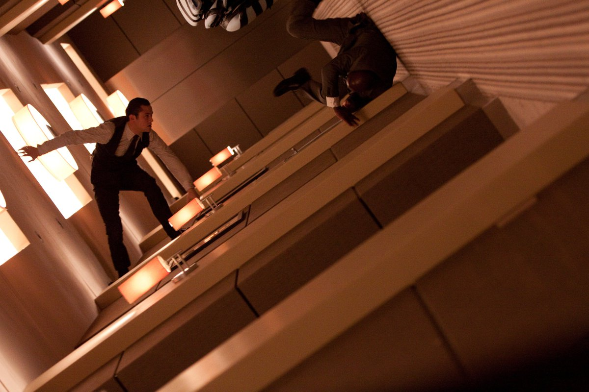
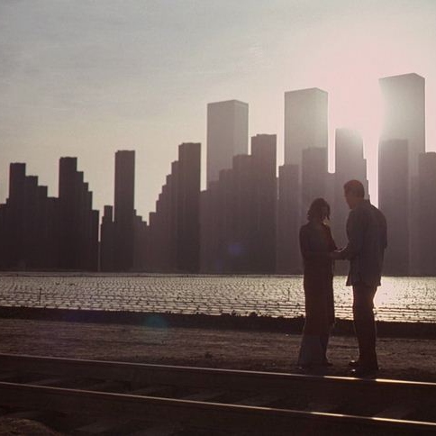
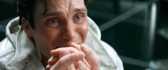

This is a fanpage for the 2 hours 28 minute movie titled Inception, directed by Christopher Nolan.
You musn't be afraid the dream a little bigger - Saito
| Rotating Hallway | In this scene Arthur is fighting someone in a hallway that his rotating, because their sleeping bodies are in a van that is spinning |  |
| Building A City In Limbo | In this scene Mal (when she was still alive) and Cobb fell into limbo and got stuck in an empty world, so they decided to build a city using little sand castle building while it was actually making a real building appear in the distance. |  |
| The Countdown | After Fischer saw the memory of his father dying and saying he was sorry, The timer for them to wake up was getting really close and everyone is spread out into different dreams and Cobb and Saito are in limbo trying to get out. |  |
In a world where people can go into their own dreams and others dreams, a man named Cobb is tasked to try and change the memory of a man named Fischer to try and save the economy. Cobb starts to gather important people on the team who each have an important role to take part in. Once Cobb got everyone for the team, he then explains that they are doing something dangerous that has never been done before. They are going to go into a dream within a dream within a dream. Some of them start to panic and worry, because if you die, then you will go into limbo. Limbo is a place where you would go to live a whole lifetime without knowing your still in a dream and you will be trapped there forever, never returning to the real world. In the end of the argument they all agree to continue on with the mission. They plan out the mission while Cobb and Arthur are training Ariadne how to use the power of the mind in a dream. Once they are done planning the mission out and training Ariadn, they begin to start the mission. The team gets on a firstclass plane with Fischer and give him something to make him fall asleep. They attach a machine to Fischer and themselves to enter his dream. They are now in a city following the car Fischer's in, in busy traffic. They are interrupted by guns shooting at them by military grade weapons by trained men. The team now realizes that Fischer had his subconcious trained to protect him better. Then out of no where a train appears ramming through the traffic, this is because of Cobb's wife who died in real life and now it's just her memory. They manage to get Fischer but Saito was shot and wounded. They continue with the mission and enter another dream. In that dream they quickly rush to get into another dream, because they are running out of time to be waked up from the dream or else they go into limbo. Once they get into the next dream they fight their way to open a vault. Once they open the vault, inside it is a memory. Fischer walks in the vault listening to the memory of his dying father and it changes his perspective on a business decision he has to make. Fischer decides to make the right decision at that moment. Saito died of his wounds so Cobb goes into linmo to try and get him out. The timer runs out signaling them to wakeup. Cobb tries to make it in time to save himself and saito after he defeated his memory of his wife. The screen goes black and now your on a beach, it shows Cobb that didn't make it in time. Soldiers greet him and take him to their master. Their master is Saito who is extremley old because he has lived a lifetime in limbo whole Cobb just got there. Cobb manages to wake him and Saito up out of limbo. They wake up on the plane all smiling because no one is dead and now they can go back to their better than before lives. Cobb gets home to his kids and spins an object on the table and walks away to hug his kids. He didn't realize that the object was still spinning defying gravity, implying that he is still in limbo and never made it out.